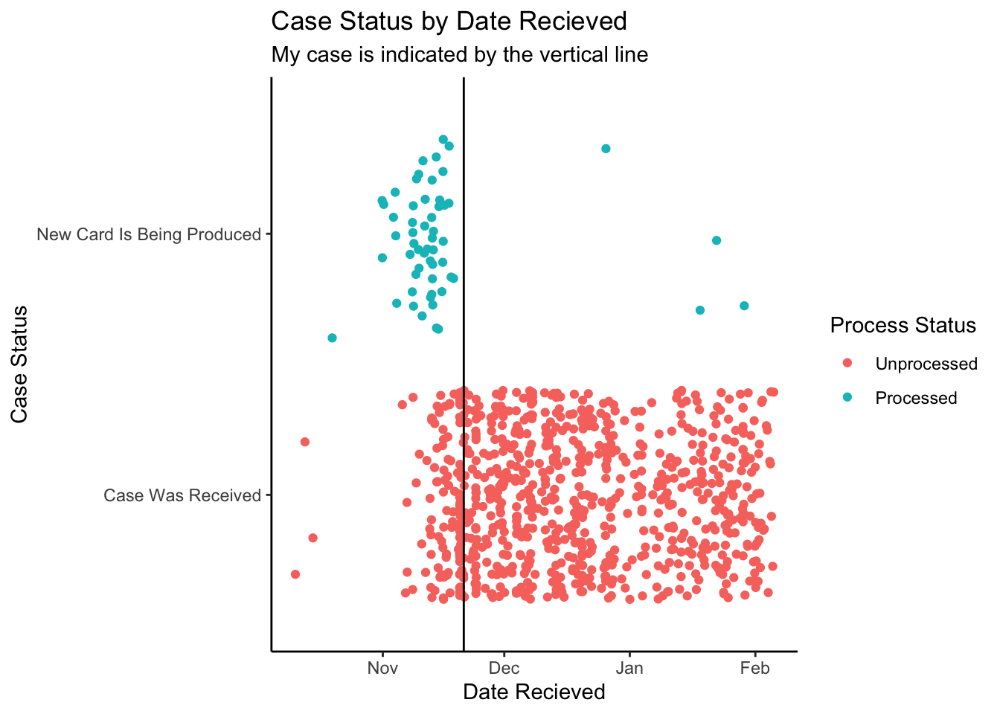

I found some code online (https://github.com/co89757/USCISCasePoll/blob/master/poll_uscis.py) to scrape the USCIS website for status updates. I used it to collect the case status for every 10th case between last October and today.
Code
from pyquery import PyQuery as pqimport requestsimport smtplibimport osimport sysimport os.pathimport reimport pandas as pdimport featherSTATUS_OK =0STATUS_ERROR =-1FILENAME_LASTSTATUS = os.path.join(sys.path[0], "LAST_STATUS_{0}.txt")mynum =1890048782# THis is my case numberdef poll_optstatus(casenumber):""" poll USCIS case status given receipt number (casenumber) Args: param1: casenumber the case receipt number Returns: a tuple (status, details) containing status and detailed info Raise: error: """ headers = {'Accept': 'text/html, application/xhtml+xml, image/jxr, */*','Accept-Encoding': 'gzip, deflate','Accept-Language':'en-US, en; q=0.8, zh-Hans-CN; q=0.5, zh-Hans; q=0.3','Cache-Control': 'no-cache','Connection': 'Keep-Alive','Content-Type': 'application/x-www-form-urlencoded','Host': 'egov.uscis.gov','Referer': 'https://egov.uscis.gov/casestatus/mycasestatus.do','User-Agent':'Mozilla/5.0 (Windows NT 10.0; Win64; x64) AppleWebKit/537.36 (KHTML, like Gecko) Chrome/46.0.2486.0 Safari/537.36 Edge/13.10586' } url ="https://egov.uscis.gov/casestatus/mycasestatus.do" data = {"appReceiptNum": casenumber, 'caseStatusSearchBtn': 'CHECK+STATUS'} res = requests.post(url, data=data, headers=headers) doc = pq(res.text) status = doc('h1').text() code = STATUS_OK if status else STATUS_ERROR details = doc('.text-center p').text()return (code, status, details)# Get every 10th case statuscase_nums = ['YSC'+str(i) for i inrange(1890038932, 1890079632)]vals = [poll_optstatus(case) for case in case_nums]df = pd.DataFrame.from_records(vals)df['case'] = case_numsfeather.write_dataframe(df, "uscis.feather")
I filtered out all cases that were rejected or cancelled for any reason.
This leaves behind cases that have either been processed, or cases that are still unprocessed.
Code
cases %<>%filter(code ==0& ((status =="Case Was Received"&grepl("765", details)) | status =='New Card Is Being Produced')) %>%mutate(status_date =parse_date(word(details,2,4),format="%B %d, %Y,"),case_numeric =as.numeric(str_extract(case,"[0-9]+")))
Unprocessed cases
First lets look at the distribution of cases that have not yet been processed, including mine:
We can see that UCSIS is falling behind on their promise to process applications between 75-90 days. they seem to have finished cases that were submitted in the beginning of November, which was 106 days ago.
Newly processed cases
Now we will look at the cases that USCIS has recently completed.
Code
fit <-smooth.spline(cases_pending$case_numeric, cases_pending$status_date)cases$predicted_receival_date =as.Date(predict(fit, cases$case_numeric)$y, origin="1970-01-01", tz="EST")cases_pending$predicted_receival_date =as.Date(predict(fit, cases_pending$case_numeric)$y, origin="1970-01-01", tz="EST")ggplot(cases, aes(x=predicted_receival_date, y = status, color = status)) +geom_jitter() +geom_vline(xintercept = my_case_date) +ggtitle('Case Status by Date Recieved', 'My case is indicated by the vertical line') +xlab('Date Recieved') +ylab('Case Status') +theme_classic() +scale_color_discrete(name="Process Status",breaks=c("Case Was Received", "New Card Is Being Produced"),labels=c("Unprocessed", "Processed"))

From this plot, it seems like cases around mid November are currently being processed, my official date is November 21st.
Conclusion
From this data, I can make the following observations:
Cases with the same date as mine have just started being processed
It seems like it takes about 21 days for an application date to go from completely unprocessed to completely processed.
Therefore:
There is a small, but non-zero chance it will be processed in the next 4 days.
There is a 50% chance it will be processed in the next 10 days.
There is close to a 100% chance that my case will be processed in the next 21 days.
Appendix
Converting Case number to date recieved
Cases with “New Card Is Being Produced” catagory do not indicate the date that those cases were first recieved, therefore I needed to convert the case number to the date the application was recieved. This is well approximated using a simple spline:
Code
ggplot(cases_pending, aes(x=case_numeric, y = status_date)) +geom_point() +geom_line(aes(y=predicted_receival_date), color ='red') +xlab('Case Number') +ylab('Case Recieved') +theme_classic()
Source Code
---title: "Determining How long it will take to get your EAD from USCIS"author: "Kieran Mace"date: "2018-02-13"categories: [R]format: html: code-fold: true---```{r setup, include=FALSE}knitr::opts_chunk$set(echo =TRUE)```## Scraping data off the USCIS websiteI found some code online (https://github.com/co89757/USCISCasePoll/blob/master/poll_uscis.py) to scrape the USCIS website for status updates. I used it to collect the case status for every 10th case between last October and today.```{python, eval=FALSE}from pyquery import PyQuery as pqimport requestsimport smtplibimport osimport sysimport os.pathimport reimport pandas as pdimport featherSTATUS_OK =0STATUS_ERROR =-1FILENAME_LASTSTATUS = os.path.join(sys.path[0], "LAST_STATUS_{0}.txt")mynum =1890048782# THis is my case numberdef poll_optstatus(casenumber):""" poll USCIS case status given receipt number (casenumber) Args: param1: casenumber the case receipt number Returns: a tuple (status, details) containing status and detailed info Raise: error: """ headers = {'Accept': 'text/html, application/xhtml+xml, image/jxr, */*','Accept-Encoding': 'gzip, deflate','Accept-Language':'en-US, en; q=0.8, zh-Hans-CN; q=0.5, zh-Hans; q=0.3','Cache-Control': 'no-cache','Connection': 'Keep-Alive','Content-Type': 'application/x-www-form-urlencoded','Host': 'egov.uscis.gov','Referer': 'https://egov.uscis.gov/casestatus/mycasestatus.do','User-Agent':'Mozilla/5.0 (Windows NT 10.0; Win64; x64) AppleWebKit/537.36 (KHTML, like Gecko) Chrome/46.0.2486.0 Safari/537.36 Edge/13.10586' } url ="https://egov.uscis.gov/casestatus/mycasestatus.do" data = {"appReceiptNum": casenumber, 'caseStatusSearchBtn': 'CHECK+STATUS'} res = requests.post(url, data=data, headers=headers) doc = pq(res.text) status = doc('h1').text() code = STATUS_OK if status else STATUS_ERROR details = doc('.text-center p').text()return (code, status, details)# Get every 10th case statuscase_nums = ['YSC'+str(i) for i inrange(1890038932, 1890079632)]vals = [poll_optstatus(case) for case in case_nums]df = pd.DataFrame.from_records(vals)df['case'] = case_numsfeather.write_dataframe(df, "uscis.feather")```## Data Transformations and cleaning```{r, message=FALSE, warning=FALSE}library(tidyverse)library(feather)library(lubridate)library(magrittr)``````{r, warning=FALSE}cases =read_feather("uscis.feather")colnames(cases)[1:3] =c('code', 'status', 'details')my_case_numeric =1890048782my_case_date =parse_date("2017-11-21")```I filtered out all cases that were rejected or cancelled for any reason. This leaves behind cases that have either been __processed__, or cases that are still __unprocessed__.```{r}cases %<>%filter(code ==0& ((status =="Case Was Received"&grepl("765", details)) | status =='New Card Is Being Produced')) %>%mutate(status_date =parse_date(word(details,2,4),format="%B %d, %Y,"),case_numeric =as.numeric(str_extract(case,"[0-9]+")))```## Unprocessed casesFirst lets look at the distribution of cases that have not yet been processed, including mine:```{r pressure, echo=FALSE} cases %>%filter(status =="Case Was Received") -> cases_pendingcases_pending %>%ggplot(aes(x=status_date)) +geom_density(fill ='#F8766D') +geom_vline(xintercept=as.numeric(my_case_date)) +ggtitle('Distribution of unprocessed cases', 'My case is the verticle black line') +xlab('Date application recieved') +theme_classic()```We can see that UCSIS is falling behind on their promise to process applications between 75-90 days. they seem to have finished cases that were submitted in the beginning of November, which was 106 days ago. ## Newly processed casesNow we will look at the cases that USCIS has recently completed.```{r}fit <-smooth.spline(cases_pending$case_numeric, cases_pending$status_date)cases$predicted_receival_date =as.Date(predict(fit, cases$case_numeric)$y, origin="1970-01-01", tz="EST")cases_pending$predicted_receival_date =as.Date(predict(fit, cases_pending$case_numeric)$y, origin="1970-01-01", tz="EST")ggplot(cases, aes(x=predicted_receival_date, y = status, color = status)) +geom_jitter() +geom_vline(xintercept = my_case_date) +ggtitle('Case Status by Date Recieved', 'My case is indicated by the vertical line') +xlab('Date Recieved') +ylab('Case Status') +theme_classic() +scale_color_discrete(name="Process Status",breaks=c("Case Was Received", "New Card Is Being Produced"),labels=c("Unprocessed", "Processed"))```From this plot, it seems like cases around mid November are currently being processed, my official date is November 21st. ## ConclusionFrom this data, I can make the following observations:* Cases with the same date as mine have just started being processed* It seems like it takes about 21 days for an application date to go from __completely unprocessed__ to __completely processed__.__**Therefore:**__* There is a small, but non-zero chance it will be processed in the next 4 days. * There is a 50% chance it will be processed in the next 10 days. * There is close to a 100% chance that my case will be processed in the next 21 days. ## Appendix### Converting Case number to date recievedCases with "New Card Is Being Produced" catagory do not indicate the date that those cases were first recieved, therefore I needed to convert the `case number` to the date the application was recieved. This is well approximated using a simple spline:```{r}ggplot(cases_pending, aes(x=case_numeric, y = status_date)) +geom_point() +geom_line(aes(y=predicted_receival_date), color ='red') +xlab('Case Number') +ylab('Case Recieved') +theme_classic()```